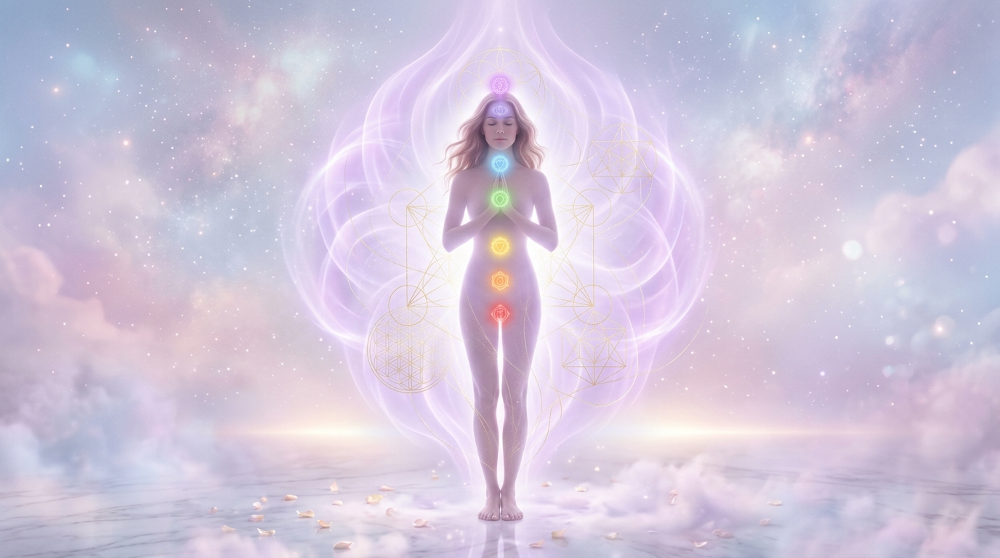
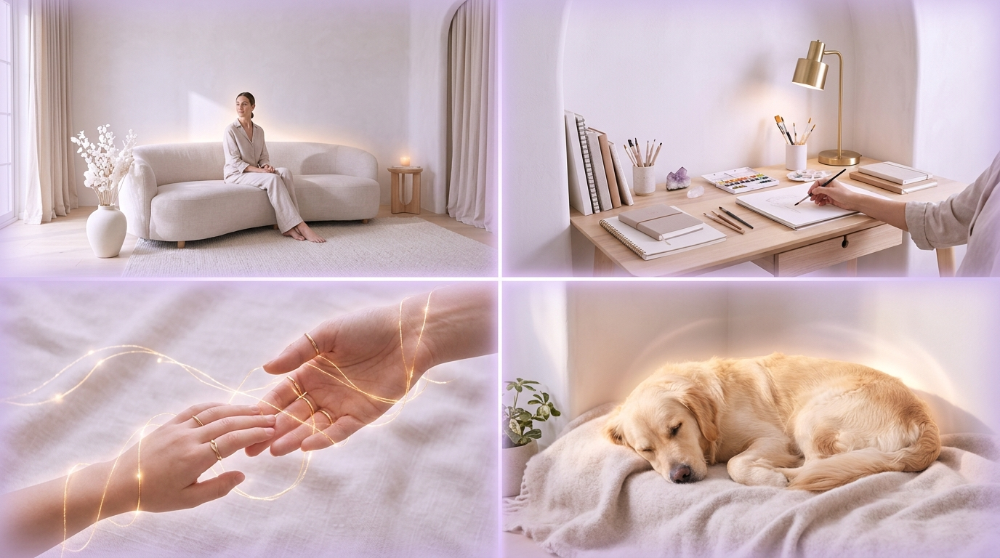
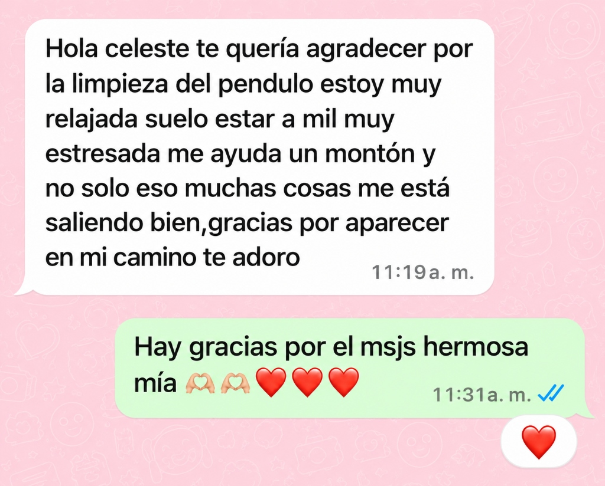
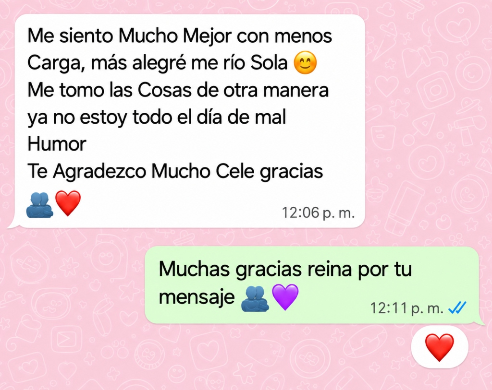
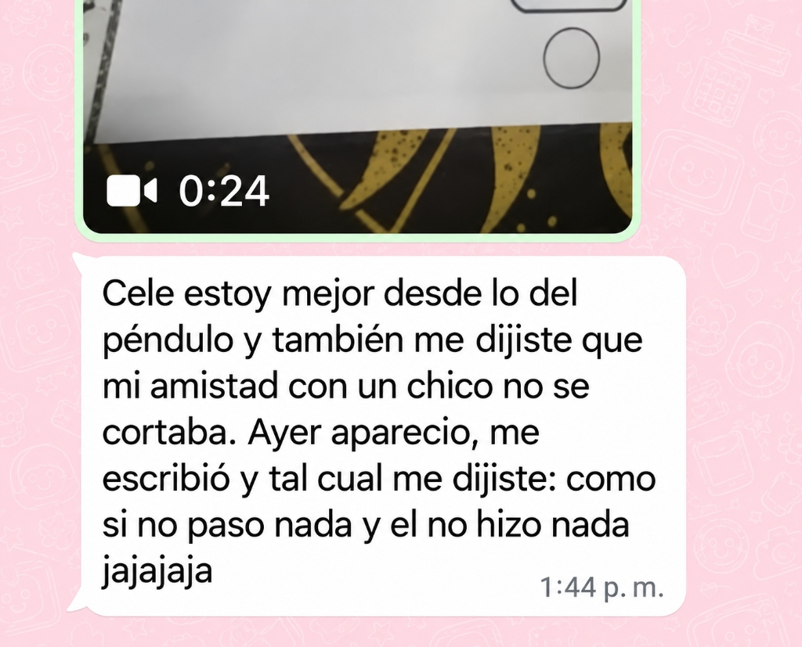
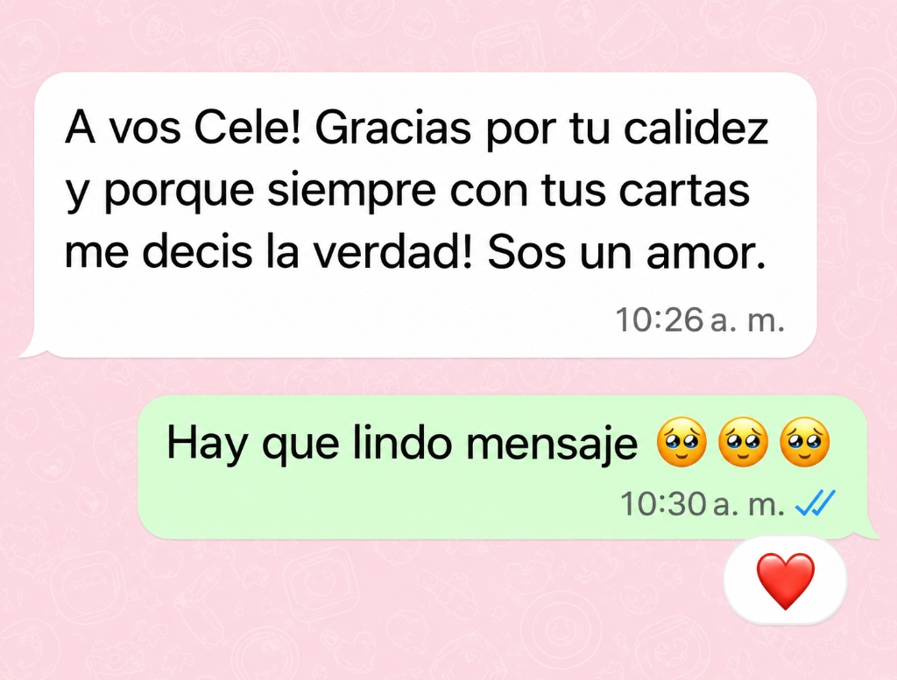

¿En qué consiste la limpieza energética integral?
Un trabajo sagrado y personalizado de purificación en los planos sutiles. A través de la labor en el altar y la conexión cuántica a distancia, se disuelven densidades acumuladas, memorias de sobrecarga e interferencias energéticas para restablecer tu frecuencia original de bienestar, paz y equilibrio.

Labor en los planos sutiles: Limpieza del aura, alineación de chakras y elevación de la frecuencia vital.
Purificación Áurica Profunda
Barrido minucioso capa por capa sobre el cuerpo sutil. Disuelve densidades residuales, memorias de cansancio ajeno y bloqueos energéticos que apagan tu vitalidad.
- Disolución de cargas densas y memorias de desgaste
- Corte de lazos de fuga e interferencias sutiles
- Restauración del brillo y la transparencia del aura
Alineación & Frecuencia Elevada
Calibración y sintonización de tus centros de energía (chakras). Irradiamos frecuencias de alta coherencia para que tu fuerza vital recupere su flujo libre y natural.
- Reconexión fluida de los vórtices energéticos
- Irradiación de vitalidad y apaciguamiento emocional
- Coherencia armónica entre mente, corazón y cuerpo
Sellado Áurico & Apertura
Consagración de un manto protector que cierra fugas energéticas e inmuniza tu campo ante entornos densos, destrabando a la vez el camino hacia nuevas oportunidades.
- Cierre de fisuras áuricas y protección sutil continua
- Desbloqueo de caminos estancados en proyectos de vida
- Anclaje de serenidad, firmeza interior y claridad
¿Qué beneficios se buscan con esta sesión?
Cada sesión está concebida para ofrecerte un alivio perceptible en tu cotidianidad. Al disolver lo que no te pertenece, tu ser recupera su ligereza y su capacidad innata de disfrutar.
Volver a habitar tu centro con calma y liviandad
Cuando el campo sutil se libera de tensiones y sobrecargas ajenas, la mente deja de sobrepensar y el cuerpo físico puede finalmente descansar.
No se trata únicamente de retirar lo que pesaba, sino de brindarte el espacio interior para que tu propia luz y sabiduría vuelvan a guiar tus decisiones.
Sensación Inmediata de Liviandad
Descarga profunda del peso acumulado en hombros, espalda y pecho energético. Se disuelve esa sensación de arrastrar un cansancio ajeno e inexplicable.
Paz Interior & Calma Emocional
Disolución de la reactividad, angustia difusa e irritabilidad constante. Te permite transitar tus días con mayor serenidad y disfrutar de un descanso nocturno verdaderamente reparador.
Claridad Mental & Enfoque Despejado
Se desvanece la niebla mental que provocaba dudas permanentes y postergación. Reconectás con tu intuición para tomar decisiones firmes y enfocadas.
Apertura de Nuevas Oportunidades
Desbloqueo de proyectos personales, dinámicas laborales y vínculos que se encontraban trabados, permitiendo que la energía y la prosperidad vuelvan a fluir.
¿Te sentís identificado con alguna de estas situaciones?
El cuerpo y el campo áurico se expresan cuando están sobrecargados. Si resonás con una o más de estas señales, tu energía te está pidiendo una pausa de orden, liberación y cuidado.
Agotamiento que no cede al descansar
Despertás con pesadez corporal constante aunque duermas muchas horas. Sentís falta de fuerza física, opresión en el pecho o tensión en la espalda sin causa médica aparente, y una baja repentina de vitalidad tras estar con ciertas personas o lugares.
Rumiación mental, niebla e hipersensibilidad
Mente que no para de sobrepensar ni de noche, dificultad para concentrarte, cambios abruptos de humor o angustia difusa que sentís ajena a tu realidad. Te sentís como una esponja absorbiendo tensiones del entorno.
Pesadez en el hogar o discusiones frecuentes
Llegás a tu casa y no lográs relajarte; el ambiente se siente denso, frío o tenso. Se generan roces o malos entendidos constantes por pequeñeces con tu entorno, las plantas se marchitan o los electrodomésticos fallan repetidamente.
Sensación de avance bloqueado o trabas reiteradas
Hacés todo lo que está a tu alcance, pero las cosas se frenan a último momento. Te sentís en un ciclo de esfuerzo desmedido con pocos frutos, trámites estancados o proyectos que no logran despegar por trabas invisibles.
No estás roto ni hay nada malo en vos: simplemente tu campo absorbió más densidad de la que puede procesar y merece un alivio consciente.
¿Cómo se realiza el procedimiento?
Un proceso transparente, cuidado y 100% a distancia. No requerís interrumpir tus actividades ni conectarte a una pantalla: todo el trabajo en el altar sagrado queda registrado para tu tranquilidad.
Conexión 100% a Distancia
Se realiza mediante tus datos (nombre completo y fecha de nacimiento). No precisás coordinar videollamada ni estar en un horario rígido: continuás tu día con total tranquilidad.
Registro en Fotos & Video
Transparencia absoluta. Durante la sesión, se realiza un registro fotográfico y en video en vivo de cada elemento consagrado en el altar y las oraciones correspondientes.
Informe Detallado en PDF
Recibís un documento exclusivo y personalizado con el diagnóstico de tu campo áurico: qué densidades o bloqueos fueron detectados y transmutados, y qué energías quedaron irradiadas.
Seguimiento & Pautas Claras
Te brindo recomendaciones prácticas de autocuidado para sostener la vibración elevada, junto a un canal directo de WhatsApp para responder cualquier duda o consulta post-sesión.
Apertura de caminos en tus distintos ámbitos
La energía trasciende a la persona: impregna los espacios que habitamos, los proyectos que emprendemos y los seres que nos acompañan. Cada área puede ser sintonizada con frecuencias de paz y fluidez.

Irradiación integral: Hogar y refugio · Vocación y proyectos · Vínculos en paz · Animales de compañía.
Purificación de Espacios & Ambientes
Neutralización de memorias residuales de conflictos, visitas pesadas o habitantes previos. Se armoniza la vibración del espacio para que vuelva a sentirse liviano, acogedor y protegido como un verdadero santuario.
Destrabe Laboral, Proyectos & Abundancia
Disolución de bloqueos sutiles en negociaciones, emprendimientos o búsquedas laborales. Despeja energías de envidia o estancamiento para reactivar la circulación de oportunidades y la prosperidad merecida.
Armonía en Relaciones & Corte de Lazos Densos
Transmutación de tensiones acumuladas y corte de cordones energéticos nocivos. Favorece el entendimiento mutuo en parejas y familias, promoviendo una comunicación honesta y la desactivación de dinámicas reactivas.
Alivio Sutil para Mascotas
Los animales actúan como pararrayos energéticos de sus humanos y de la casa. Este trabajo les brinda una descarga amorosa de sobrecargas absorbidas, devolviéndoles su vitalidad, serenidad y bienestar natural.
Historias reales de consultantes en su propia voz
Mensajes auténticos y espontáneos recibidos por WhatsApp tras la sesión y la recepción de su devolución energética. Sin filtros: el testimonio sincero de volver a estar en paz.
“Estoy muy relajada, solía estar a mil muy estresada... me ayudó un montón y no solo eso: muchas cosas me están saliendo bien.”
La consultante transitaba un período de sobreexigencia y tensión nerviosa continua. Tras la labor con el péndulo y la limpieza áurica, no solo recuperó la calma física, sino que experimentó un destrabe inmediato en situaciones cotidianas que venían bloqueadas.

“Me siento con menos carga, más alegre me río sola... ya no estoy todo el día de mal humor.”
Disolución de la pesadez residual y la irritabilidad reactiva. Un cambio palpable en la forma de percibir el día y encarar los vínculos con ligereza.

“Cele, estoy mejor desde lo del péndulo... y tal cual me dijiste, ayer apareció y me escribió como si nada.”
Desbloqueo de canales de comunicación interrumpidos, resolución de silencios pesados y alineación con las respuestas que el consultante necesitaba.

“Gracias por tu calidez y porque siempre con tus cartas me decís la verdad. Sos un amor.”
Un trabajo sin falsas promesas ni manipulaciones: contención amorosa, verdad y respeto sagrado en cada devolución.

¿Querés ser la próxima persona en experimentar esta transformación?
Cada sesión se realiza con dedicación total, respeto por tus tiempos y confidencialidad absoluta de tu proceso.
Inversión de tu Limpieza Energética Integral
Trabajo energético personalizado 100% a distancia, individualizado y adaptado a tus necesidades particulares con informe en PDF y seguimiento continuo.
Tarifa Nacional
Tarifa Internacional
¿Qué incluye tu limpieza energética integral?
Un trabajo pensado para vos
Cada persona llega con una historia, una situación y necesidades diferentes. Mi propuesta es ofrecerte un espacio de trabajo energético individualizado, sin fórmulas rígidas ni procedimientos idénticos para todos.
Atención dedicada 1 a 1 · Cupos limitados por semana para asegurar máxima atención